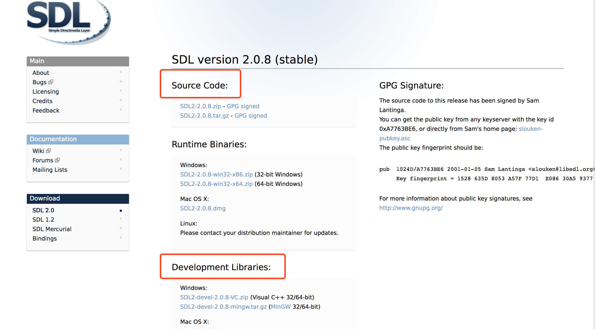
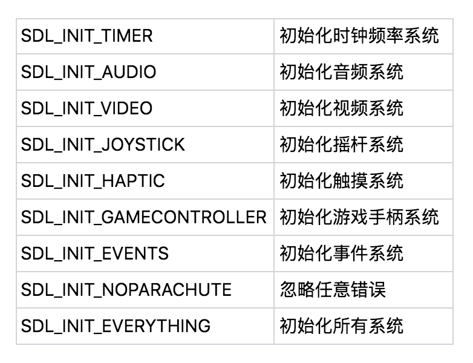
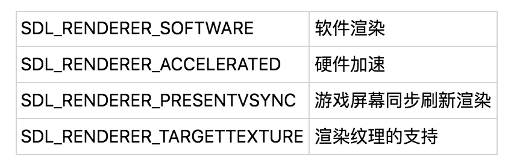
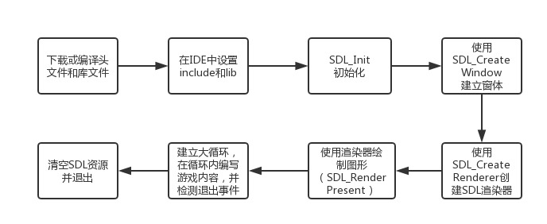

- 00 开篇词 跟我学，你也可以开发一款游戏！.md.html
- 复习课 带你梳理客户端开发的三个重点.md.html
- 第10讲 如何载入“飞机”和“敌人”？.md.html
- 第11讲 如何设置图像的前后遮挡？.md.html
- 第12讲 如何设置精灵的变形、放大和缩小？.md.html
- 第13讲 如何设置淡入淡出和碰撞检测？.md.html
- 第14讲 如何制作游戏资源包和保存机制？.md.html
- 第15讲 如何载入背景音乐和音效？.md.html
- 第16讲 如何在游戏中载入UI和菜单？.md.html
- 第17讲 如何用鼠标和键盘来操作游戏？.md.html
- 第18讲 如何判断客户端的网络连接？.md.html
- 第19讲 如何嵌入脚本语言？.md.html
- 第1讲 游戏开发需要了解哪些背景知识？.md.html
- 第20讲 脚本语言在游戏开发中有哪些应用？.md.html
- 第21讲 如何使用脚本语言编写周边工具？.md.html
- 第22讲 如何选择合适的开发语言？.md.html
- 第23讲 如何定制合适的开发协议？.md.html
- 第24讲 不可忽视的多线程及并发问题.md.html
- 第25讲 如何判断心跳包是否离线？.md.html
- 第26讲 如何用网关服务器进行负载均衡？.md.html
- 第27讲 如何制作游戏内容保存和缓存处理？.md.html
- 第28讲 热点剖析（一）：HTML5技术是如何取代Flash的？.md.html
- 第29讲 热点剖析（二）：如何选择一款HTML5引擎？.md.html
- 第2讲 2D游戏和3D游戏有什么区别？.md.html
- 第30讲 热点剖析（三）：试试看，你也可以编写一款HTML5小游戏！.md.html
- 第31讲 热点剖析（四）：安卓端和苹果端游戏开发有什么区别？.md.html
- 第32讲 热点剖析（五）：如何选择移动端的游戏引擎？.md.html
- 第33讲 热点剖析（六）：AR和人工智能在游戏领域有哪些应用？.md.html
- 第34讲 热点剖析（七）：谈谈微信小游戏的成功点.md.html
- 第35讲 热点剖析（八）：谈谈移动游戏的未来发展.md.html
- 第36讲 热点剖析（九）：谈谈独立开发者的未来发展.md.html
- 第3讲 游戏的发动机：游戏引擎.md.html
- 第4讲 底层绘图接口的妙用.md.html
- 第5讲 构建游戏场景的武器：地图编辑器.md.html
- 第6讲 从0开始整理开发流程.md.html
- 第7讲 如何建立一个Windows窗体？.md.html
- 第8讲 如何区分图形和图像？.md.html
- 第9讲 如何绘制游戏背景？.md.html
- 结束语 做游戏的过程就像是在雕琢一件艺术品.md.html
- 课后阅读 游戏开发工程师学习路径（上）.md.html
- 课后阅读 游戏开发工程师学习路径（下）.md.html
- 捐赠
第4讲 底层绘图接口的妙用
上一节，我给你介绍了游戏引擎的概念及其在游戏开发中所起的作用。同时，我也提到了游戏引擎背后的工作方式。在代码层面，游戏引擎是一套对底层绘图、音频、操作系统接口的封装实现。
在此基础上，我还举了一个在游戏屏幕上画线条的例子。在这个例子中，画线的接口函数在背后分解、组合、计算，并将绘制工作交给底层绘图接口。这个绘图接口，就是今天要讲的内容。
几种常见的绘图接口
前面我已经说过，我会针对2D游戏来讲解游戏开发的流程和细节，所以，这里我先介绍几种2D绘图接口（即API，全称Application Programming Interface）。我选择了5种Windows下最流行的绘图接口，分别讲解。
1.OpenGL
OpenGL是老牌的图形图像接口。GL是Graphics Library的缩写。所以，顾名思义，OpenGL就是开放图形接口的意思。和接下来要讲的DirectX一样，OpenGL也可以创建和渲染2D、3D图形。但是，和DirectX不同的是，它可以在多种平台下运行，比如Windows、Linux、macOS和部分UNIX，而DirectX只能在Windows生态下运行。
OpenGL本身只提供图形渲染接口，如果你需要别的功能，比如音频、鼠标、键盘的操作，甚至是创建一个窗体，都需要别的扩展库支持。
2.DirectX
说起DirectX，这个名字已经如雷贯耳。DirectX的开发初衷，是为了让游戏开发者能像在DOS平台编写游戏一样，在当时新的Windows 95平台上，也能一样高效、快速地操纵各种硬件设备。
其实，在DirectX发布之前，微软已经将OpenGL包含在Windows系统里面。随着时间的推移，OpenGL逐渐成为了行业标准，而DirectX自然免不了与其展开竞争。
这里，我主要介绍一下DirectX中的两个核心组件。这两个核心组件的功能与2D游戏编程息息相关，你一定得了解一下。
第一个是DirectDraw。它是早期DirectX中掌管2D部分的组件。DirectDraw类似我之后要说的GDI，支持显存位图，而不是只能将位图存放在内存里，所以DirectDraw更贴近硬件。但是在DirectX 7版本之后，DirectDraw被合并到Direct Graphics组件中。虽然目前仍有很多人在使用DirectDraw的老版本开发包，然而DirectDraw已经被微软逐渐淘汰。
第二个是Direct2D。它是微软推出的最新2D组件，它的出现是为了取代Windows下的GDI、GDI+和DirectDraw。Direct2D能通过硬件加速来绘制2D图形，也支持高质量2D图形渲染，比如支持ClearType呈现的方式、除锯齿、几何位图的绘制和填充等等。
3.SDL
SDL全称Simple DirectMedia Layer，直译就是简单的直接媒体层。从严格意义上来讲，SDL并不算是“独立的”图形渲染接口，因为它将各类操作系统的图形图像渲染接口进行了封装，包装成统一的函数，以此来方便调用。比如，在Windows下，它封装了DirectX和GDI+；在Linux下，它封装了Xlib等等。同时，它也提供了OpenGL的调用函数。
SDL不仅仅可以对现有图形图像接口进行封装，它也提供SDL官方自己发布的编程接口。比如，SDL_image、图像接口、SDL_net、网络接口等等。后续我将介绍到的Pygame，其背后就是调用SDL编写的。
Pygame是使用Python封装的游戏库，你可以很方便地利用Pygame进行2D游戏的编写，它的背后，调用的就是SDL的接口。所以我们将利用Pygame来对2D游戏开发流程做一个完整的梳理。虽然网上关于Pygame的代码和教材很多，但是我们要讲的，不仅仅是Pygame代码是如何编写的，而是要从Pygame的代码中，分析2D游戏的编写逻辑和编程思想。在这个过程中，Pygame只是一个载体。
4.GDI
GDI，全称Graphics Device Interface，也是Windows下的图形设备接口。它所做的就是处理Windows程序的图形输出，负责在Windows系统和绘图程序之间进行信息的交换。使用GDI的人已经越来越少，从编程的方便性和硬件加速等功能来看，GDI被GDI+取代是显而易见的。
5.GDI+
在Windows下，大部分接触过图形编程的程序员都会用过GDI+。而GDI+其实就是GDI的进阶版本。
GDI+是有硬件加速功能的，而GDI没有；GDI是以C语言接口的形式提供的，而GDI+则是C++和托管类的形式提供；从接口代码的层次上说，GDI+对程序员更友好，使用起来也更顺手。
GDI+还提供了图像处理的接口，比如提供了Image、Bitmap等类，可以用于读取、保存、显示，操作各种类型的图像，比如BMP、JPG、GIF等。
GDI和GDI+的绘图操作也存在差别。GDI中存在一个称为“当前坐标”（MoveTo）的位置。“当前坐标”的存在是为了提高绘画的效率。
我还拿画线的过程来举例。有一条新的线连着一条老的线画，如果有了“当前坐标”的设置，逻辑上可以避免每次画线都要给出两个点的坐标（开始和结束）；如果每次都以该“当前坐标”做为起始点，线条绘制结束后，线的结束位置就成为“当前坐标”。
事实上，这种方式的存在是有历史原因的。有一种说法来自很早的Logo语言。这种语言针对儿童进行寓教于乐的编程教育。它的绘画逻辑是，如果有“当前坐标”这个概念，只需要一个递归就可以不停地画线，最终组成一个图形。所以后期很多的绘画接口都沿用这种方式去做。但实际到了2000年左右，人们发现这种方式并不方便，因此GDI+取消了这个“当前坐标”。
一个原因是不方便；另一个原因是，如果无法确定“当前坐标”，绘图就会出现差错。而用GDI+绘制线条，则可以直接在DrawLine函数中指定起始点和结束点的坐标位置。
如何直接使用绘图接口进行游戏开发？
通过上面的介绍，你是否对Windows下几大流行的绘图接口有了大致的了解呢？接下来你或许会问，那我了解这些图形接口的编程接口后，是不是就可以直接用这些接口进行游戏的开发呢？
答案当然是可以的。由于SDL的开发便利性和通用性，所以我拿SDL编程接口作为例子，来阐述一下究竟怎样通过图形接口直接进行游戏的开发。
从最基础的开始，我们先要从SDL的网站下载SDL的最新版本，下载网址是： http://www.libsdl.org/download-2.0.php （写作这篇文章的时候，最新的版本是2.0.8稳定版）。

在下载的网站页面，我们可以看到Source Code一栏，这是SDL的源代码。有一定编程基础的同学可以下载源代码，直接使用VC++、MinGW等编译器进行编译，编译完的头文件和库文件直接就可以使用。
如果你对编译不熟悉，可以选择下载Development Libraries，也就是编译完成后的开发包。网站已经将Windows下的开发环境分为VC++32位版和64位版、MinGW32位版和64位版。为了教学方面和统一，也照顾各种平台的用户，我建议使用MinGW的32位版。因为64位Windows可以兼容32位的应用。至于MinGW编译器和IDE的下载安装细节，我将会在后续的专栏文章中介绍。
下载完成后，将压缩包解压缩到任意目录，头文件和库文件使用解压缩出来的“i686-w64-mingw32”这个目录下的“include”和“lib”。
接下来，我们在IDE中设置include路径和lib路径，链接程序的时候需要在IDE设置包含库文件libsdl.a、libsdlmain.a，就可以开始在IDE中编写代码了。
在开始开发的时候，首先使用SDL_Init来进行初始化。用这个方法传入一个unsigned int类型的参数，参数列表就像这样：

其中“初始化所有系统”这个选项，除了“忽略任意错误”外，包含了以上所有不同的初始化系统，一般使用SDL_INIT_EVERYTHING即可。
随后，我们要使用SDL_CreateWindows来创建一个窗体。SDL_CreateWindows支持六个参数，分别是：窗体名称、在Windows屏幕显示的x坐标、在Windows屏幕显示的y坐标、宽、长、显示方式。
然后将使用SDL_CreateRenderer创建一个SDL的渲染器（SDL_Renderer）。渲染器的参数是：

随后可以使用SDL_RenderClear来清空SDL渲染器、使用SDL_RenderPresent方法将渲染的结果显示出来。然后我们需要建立一个大循环，在这个循环内，你可以把SDL支持的图形图像函数或者其他逻辑代码往里面填写，完成游戏的程序内容，具体的操作我会在之后的文章详细介绍。
在这个大循环内，我们要用到SDL_Event事件系统。在循环内捕捉用户事件，比如要退出这个循环就必须点击右上角的X关闭按钮才行。如果你点击了X按钮，就会被while内的event事件捕捉到，并且匹配是不是退出事件，如果是退出事件就退出程序。
最终退出程序的时候，使用SDL_Quit清除资源退出程序。

我们结合这张流程图来看一下将这些内容串联起来的代码：
#include <SDL.h>
int main(int argc,char *args[])
{
SDL_Window* window;
SDL_Renderer* render;
SDL_Event e;
bool q = 0;
int sdl=SDL_Init(SDL_INIT_EVERYTHING);
初始化完成后，我们要建立窗体，并编写后续的步骤：
if(0 <= sdl ){
// 当SDL初始化完成后创建一个标题为"SDL Window"的窗口,窗口对齐方式为居中对齐，分辨率为640x480的窗口
g_pWindow=SDL_CreateWindow("SDL Window",
SDL_WINDOWPOS_CENTERED,SDL_WINDOWPOS_CENTERED,
640,480,SDL_WINDOW_SHOWN);
if(0 != window)
render=SDL_CreateRenderer(window,-1,0);
}
SDL_SetRenderDrawColor(render,0,255,255,255);
SDL_RenderClear(render);
SDL_RenderPresent(render);
接下来是游戏主循环的内容：
while( 0 == q )
{
while( 0 != SDL_PollEvent( &e ) )
{
//检测到用户需要退出
if( e.type == SDL_QUIT )
q = true;
}
}
SDL_Quit();
return 0;
}
这个简单的例子说明了如何直接利用SDL接口编写游戏。直接利用其他图形接口编写游戏，也基本是这样的步骤。
小结
我来给今天的内容做一个总结，你只需要记住这些内容即可：
- 绘图接口绘图接口其实就是使用C/C++语言或汇编语言，通过操作系统的底层，调用诸如显卡、内存这些绘图设备，最后做成接口；
- SDL拥有统一封装的绘图接口，你可以在各个平台无缝编译和使用。
现在，你是不是对游戏开发的一部分流程有点了然于胸了呢？
给你留个小思考题吧。
我们提到了直接利用绘图接口编写游戏，请问，如果这样，还需要“游戏引擎”吗？如果需要的话，这个“引擎”应该放在哪里呢？
欢迎留言说出你的看法，我在下一节的挑战中等你！
© 2019 - 2023 Liangliang Lee. Powered by gin and hexo-theme-book.